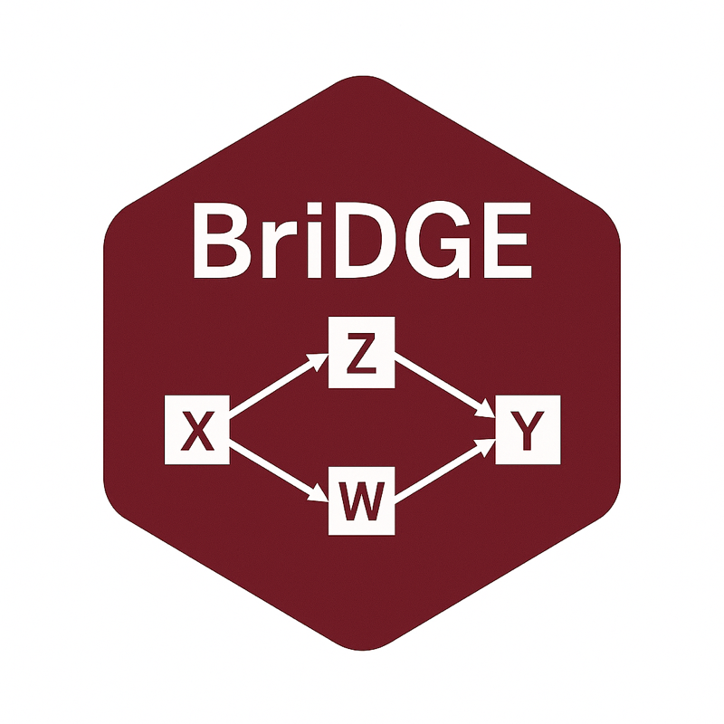
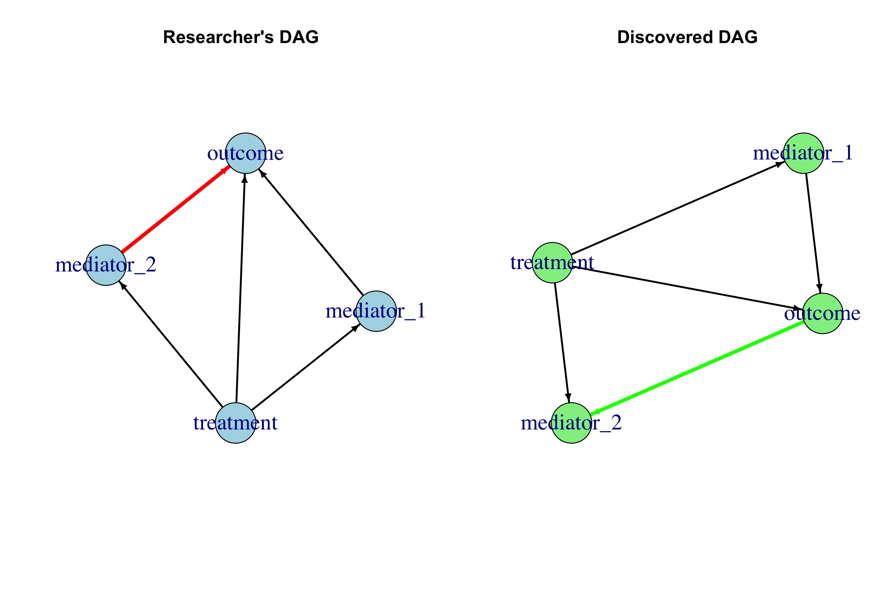

📖 Documentation & tutorial: https://gav888.github.io/BriDGE/
Overview
BriDGE is an R package for causal analysis of randomized controlled trial (RCT) data. It integrates causal discovery through Directed Acyclic Graphs (DAGs) with flexible mediation analysis using Generalized Additive Models (GAMs), so that researchers can move beyond average treatment effects and study the mechanisms behind them.
BriDGE is the companion package to the paper:
Veltri, G. A., & Banerjee, S. (in press). BriDGE the gap – improving Behavioural research by integrating DAGs and GAMs in Experiments. Behavior Research Methods.
A well-run RCT answers one question with high confidence: did the intervention work? It usually leaves a second, equally important question untouched: why did it work — or fail to? Which of the mediators you measured actually carried the effect? Is the mediator–outcome relationship linear, or does it flatten, accelerate, or interact with the treatment? And is the causal structure you assumed when designing the study actually consistent with the data you collected? These questions matter for theory building, for tuning an intervention before scaling it, and for anticipating why an effect that worked in one population might not replicate in another.
BriDGE addresses them by combining three ingredients that are rarely used together in applied behavioral research. First, it treats your theoretical causal model — the researcher’s DAG — as an explicit, testable object rather than an implicit assumption. Second, it runs a causal discovery algorithm over the same data, constrained by what randomization guarantees (treatment can influence downstream variables; nothing can influence treatment), and compares the discovered structure against your theory. Where the two disagree, you get a concrete, data-driven hypothesis to examine rather than a silent modeling assumption. Third, it estimates direct and indirect (mediated) effects using GAMs, whose smooth terms accommodate the nonlinear relationships that behavioral data routinely contain and that classic linear mediation analysis can get badly wrong. Every effect estimate comes with bootstrap confidence intervals, and a perturbation-based sensitivity analysis tells you how fragile the conclusions are.

BriDGE contrasts your theoretical causal model (left) with the structure discovered from the data under experimental constraints (right); disagreeing edges (highlighted) become hypotheses to examine.
How BriDGE works
The package implements the analysis stages of the BriDGE protocol described in the paper. A typical run of bridge_analyze() walks through them in order:
- Formalize your theory. Your assumptions — treatment affects each mediator, each mediator affects the outcome, treatment may also act directly — are encoded as the researcher’s DAG.
- Interrogate it with causal discovery. A structure-learning algorithm (MMHC by default; hill-climbing and PC-stable are available) learns a DAG from the data. Experimental design knowledge is enforced: edges from treatment to mediators are whitelisted, and edges into the randomized treatment are forbidden. The output is an edge-by-edge comparison between the discovered structure and your theory. Agreements corroborate your model; disagreements — an unexpected mediator-to-mediator link, a missing pathway — are flagged for scrutiny.
-
Estimate effects flexibly. Mediation analysis decomposes the total treatment effect into a direct effect and one indirect effect per mediator, using counterfactual prediction from an outcome GAM with smooth mediator terms. Setting
nonlinear = FALSEre-runs everything with linear models, which makes for a useful robustness comparison: if the two disagree, the nonlinearity is doing real work. -
Quantify uncertainty and robustness. Effects are bootstrapped (reproducibly, via the
seedargument), and a sensitivity analysis re-estimates everything on slightly perturbed data. Conclusions that survive both are worth reporting.
The result is not a black-box verdict but a structured body of evidence: what your theory predicted, what the data suggest instead, how large each causal pathway is, and how much you should trust those numbers.
When to use BriDGE (and when not to)
BriDGE is designed for experiments with a mechanistic question: you measured one or more candidate mediators and want to know how much of the treatment effect flows through each. It earns its complexity when several mediators are in play, when nonlinear mediator–outcome relationships or treatment-by-mediator interactions are plausible, and when the sample is large enough to support them (as a rule of thumb, several hundred observations).
If you have a single mediator, firmly linear relationships, and a small sample, classic linear mediation or SEM may serve you better — though even then, drawing the DAG and running the discovery step costs little and can reveal surprises. The companion paper (Figure 1) provides a full decision flowchart, including experimental-design considerations (mediator timing, measurement quality, power) that no statistical method can compensate for after the fact.
Key Features
- 🔍 Causal Discovery: Multiple algorithms (MMHC, HC, PC-stable) to learn causal structures from data, with experimental design knowledge enforced through whitelists (treatment → mediators) and blacklists (no edges into the randomized treatment)
- 📊 Flexible Mediation Analysis: Handles nonlinear relationships using GAMs with automatic smoothing
- 🔄 Bootstrap Inference: Robust uncertainty quantification through parallel bootstrapping, with reproducible seeding
- 🎯 Sensitivity Analysis: Assess robustness of findings to data perturbations
- 📈 Comprehensive Visualization: Publication-ready plots for all analysis components
- ⚡ Parallel Processing: Efficient computation for large-scale analyses
- 🛡️ Robust Error Handling: Graceful handling of convergence issues and edge cases
Quick Start
library(BriDGE)
# Generate example RCT data with nonlinear relationships
data <- bridge_generate_data(n = 1000, nonlinear_strength = 0.5)
# Run complete causal analysis pipeline
results <- bridge_analyze(
data = data,
treatment = "treatment",
mediators = c("mediator_1", "mediator_2"),
outcome = "outcome",
n_bootstraps = 500,
parallel = TRUE
)
# View results
print(results)
summary(results)
plot(results)Detailed Usage
1. Causal Discovery
Discover causal relationships from your data using various algorithms:
discovery_results <- bridge_discover(
data = data,
treatment = "treatment",
mediators = c("mediator_1", "mediator_2"),
outcome = "outcome",
method = "mmhc" # Options: "mmhc", "hc", "pc"
)
# Compare discovered DAG with theoretical expectations
plot(discovery_results$researcher_dag)
plot(discovery_results$discovered_igraph)2. Mediation Analysis
Perform mediation analysis with support for nonlinear relationships:
mediation_results <- bridge_mediate(
data = data,
treatment = "treatment",
mediators = c("mediator_1", "mediator_2"),
outcome = "outcome",
n_bootstraps = 1000,
nonlinear = TRUE, # Use GAMs for flexible modeling
handle_convergence = "simplify", # Options: "warn", "simplify", "error"
seed = 42 # Reproducible bootstrap
)
# Extract specific effects
direct_effect <- mediation_results$summaries$direct_effect
indirect_effect_m1 <- mediation_results$summaries$nie_mediator_13. Sensitivity Analysis
Assess the robustness of your findings:
sensitivity_results <- bridge_sensitivity(
data = data,
treatment = "treatment",
mediators = c("mediator_1", "mediator_2"),
outcome = "outcome",
perturbation_sd = 0.1
)4. Visualization
Create publication-ready visualizations:
# Generate all plots
plots <- bridge_plot(
discovery_results = discovery_results,
mediation_results = mediation_results,
data = data,
treatment = "treatment",
mediators = c("mediator_1", "mediator_2"),
outcome = "outcome"
)
# Access specific plots
plots$effect_sizes
plots$bootstrap_distributionsWorking with Your Own Data
The treatment variable must have exactly two levels; the first factor level is taken as control and the second as treated. Both numeric and labeled codings work:
your_data$treatment <- factor(your_data$treatment) # 0/1
your_data$treatment <- factor(your_data$group,
levels = c("control", "treatment")) # labelsData requirements:
- Sample size: at least 200 observations recommended
- Treatment: binary factor (exactly two levels)
- Mediators: continuous or discrete
- Outcome: continuous
-
Missing data: complete cases required — remove or impute first (
na.omit(data))
Main Functions
| Function | Description |
|---|---|
bridge_analyze() |
Complete analysis pipeline wrapper |
bridge_discover() |
Causal discovery from data |
bridge_mediate() |
Mediation analysis with bootstrapping |
bridge_sensitivity() |
Sensitivity analysis |
bridge_compare() |
Group comparison statistics |
bridge_plot() |
Generate visualizations |
bridge_summary() |
Create analysis summary |
bridge_generate_data() |
Generate synthetic RCT data |
Advanced Options
Handling Convergence Issues
# Strict convergence requirements
results <- bridge_analyze(
data = data,
treatment = "treatment",
mediators = mediators,
outcome = "outcome",
handle_convergence = "error",
gam_maxit = 500,
gam_epsilon = 1e-8
)
# Automatic model simplification
results <- bridge_analyze(
data = data,
treatment = "treatment",
mediators = mediators,
outcome = "outcome",
handle_convergence = "simplify"
)Parallel Processing
# Utilize multiple cores for faster computation
results <- bridge_analyze(
data = data,
treatment = "treatment",
mediators = mediators,
outcome = "outcome",
parallel = TRUE, # Auto-detects available cores
n_bootstraps = 2000
)Reproducing the Paper
The simulation scripts that generated the results in the companion paper (synthetic scenarios with 2, 3, and 5 mediators, and the JOBS II semi-synthetic benchmark) ship with the package:
list.files(system.file("simulations", package = "BriDGE"))See inst/simulations/README.md for details. The scripts are self-contained and long-running with default settings.
Citation
If you use BriDGE in your research, please cite the companion paper:
Veltri, G. A., & Banerjee, S. (in press). BriDGE the gap – improving Behavioural research by integrating DAGs and GAMs in Experiments. Behavior Research Methods.
citation("BriDGE")Requirements
- R (>= 3.5.0)
- Dependencies:
bnlearn,mgcv,ggplot2,dplyr,igraph,boot,parallel,Hmisc
License
This project is licensed under the MIT License — see the LICENSE.md file for details.
Copyright (c) 2026 Giuseppe A. Veltri
Acknowledgments
- Built on top of excellent R packages including
bnlearnfor causal discovery andmgcvfor GAM fitting - Inspired by modern causal inference methodologies in behavioral research
Support
- 📧 Email: gaveltri@nus.edu.sg
- 🐛 Issues: GitHub Issues
News
See NEWS.md for the changelog. Current release: v1.0.0, the first public release accompanying the accepted paper.